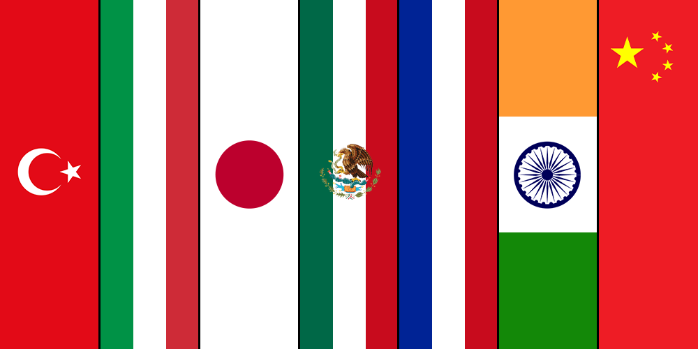

Yemek, sadece karın doyurmak değil; bir toplumun tarihini, geleneklerini ve yaşam tarzını yansıtan bir kültür unsurudur. Dünya mutfakları, coğrafi konum, iklim, tarihsel etkileşimler ve dini inanışlar gibi birçok faktörle şekillenmiştir. Aşağıda, bazı kültürlerin mutfak özelliklerine yakından bakabilirsiniz.
Akdeniz mutfağı; Türkiye, Yunanistan, İtalya, İspanya gibi ülkelerde görülür. Zeytinyağı, taze sebzeler, balık ve tahıllar bu mutfağın temelidir. Sağlıklı yaşam ile ilişkilendirilir. İtalyan mutfağı makarna ve pizza ile ünlüyken, Türk mutfağı kebaplar, zeytinyağlılar ve tatlılarla ön plana çıkar.
Asya kıtası çok geniş olduğu için mutfak kültürü de çeşitlidir. Çin mutfağında wok ile hızlı pişirme, soya sosu ve pirinç ön plandayken, Japonya'da minimalizm, deniz ürünleri ve çiğ tüketim yaygındır. Hindistan mutfağı ise baharat zenginliği ve vejetaryen yemekleriyle dikkat çeker.
Meksika, Peru, Arjantin gibi ülkelerde görülen bu mutfak, mısır, fasulye, et ve acı biber üzerine kuruludur. Meksika mutfağı tacos, enchiladas ve guacamole gibi lezzetlerle tüm dünyada tanınır. Ayrıca yerel mutfaklar İspanyol etkisiyle harmanlanmıştır.
Fransa, Almanya, İngiltere gibi ülkelerin mutfakları klasikleşmiş yemek teknikleri ve zengin tatlarla bilinir. Fransız mutfağı dünya gastronomisine yön vermiştir: soslar, peynirler ve şarap eşleşmeleri meşhurdur. Her ülkenin kendine özgü tatları vardır.
Japon mutfağı yalnızca lezzetle değil sunumla da ilgilidir. Estetik önemlidir. Yemeğin dengesi, rengi ve doğaya saygı felsefeye dayanır. Fermente gıdalar ve sade pişirme teknikleri sağlık açısından faydalı görülür.
Aşağıdaki harita üzerinden ülkelerin mutfaklarına göz atabilirsiniz:
